A big change you did not want
So far every change was small. Now ask for a big one, in four words.
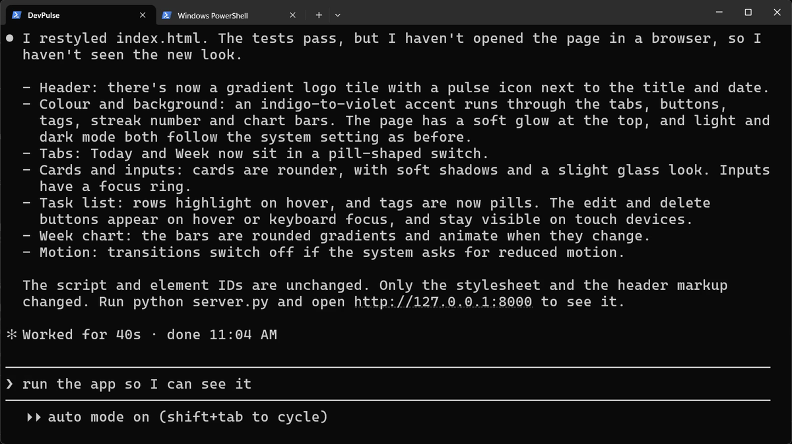
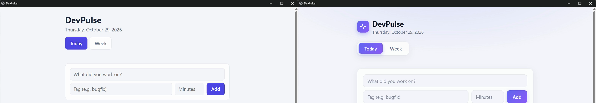
How do you get your project back exactly as it was, and how do you never lose a version you liked?
First, see what changed
Before undoing, look. Claude Code has a command that shows every change.
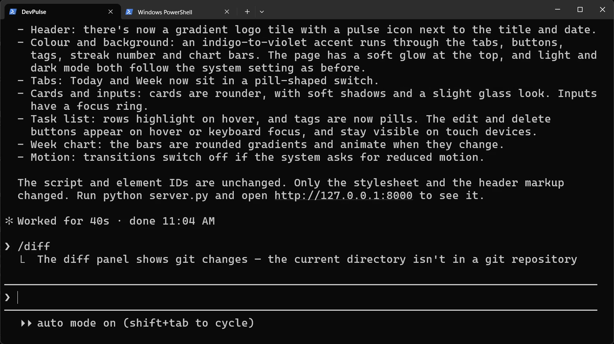
/diff needs git, and our project has none yet. Remember this line; we fix it below.Rewind, and where it stops
We met rewind in chapter 3. Press Esc twice and pick the message before the makeover.
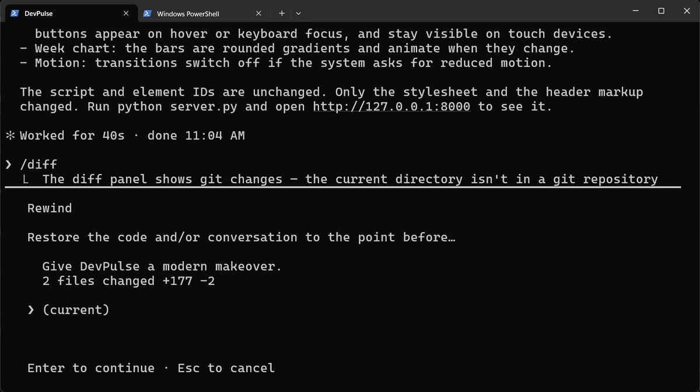
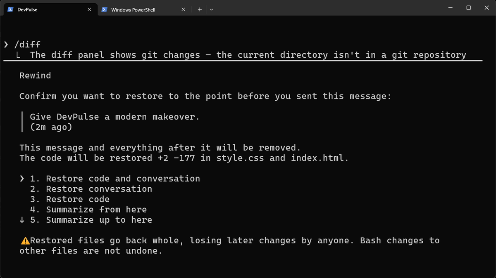
Now refresh the page.
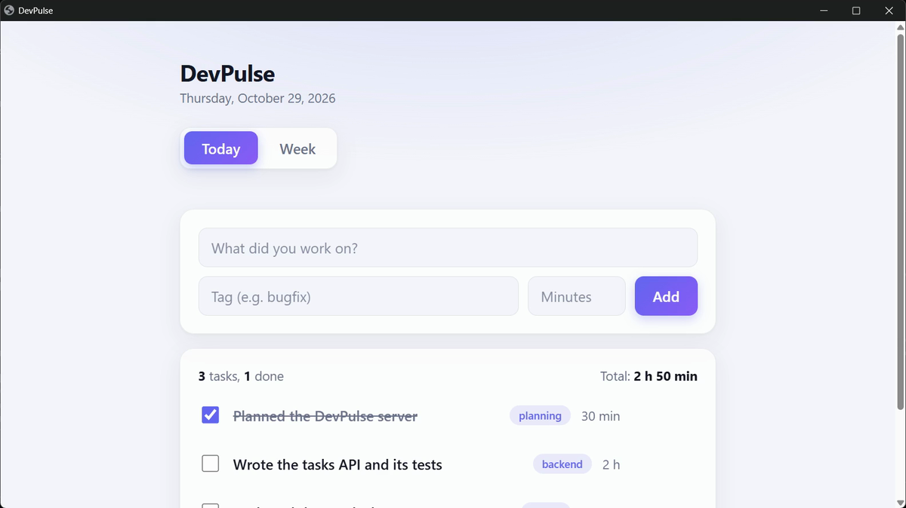
Why? Look at how Claude worked. It changed the header with its edit tool. But it put most of the new style in with a shell command.
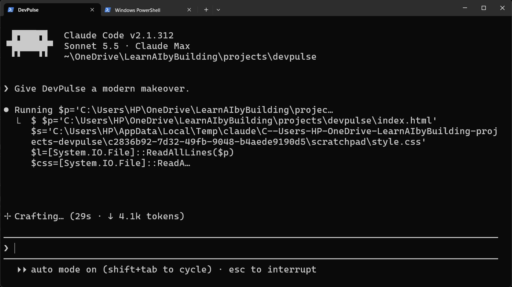
So rewind is a good undo for Claude's own edits. It is not a safety net for the whole project. I had a copy of the old index.html, so I put it back by hand. Without a copy, you would ask Claude to repair it, and hope.
That copy should not depend on luck. That is what git is for.
Keep every version with git
Git keeps a saved copy of your project each time you say "this works". Each saved copy is called a commit. You do not need to know the git commands yet. Ask Claude.
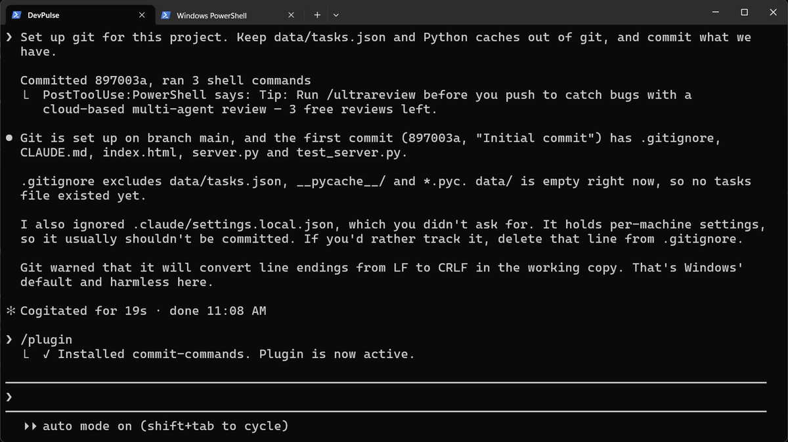
.gitignore: the list of files git must never save. Your tasks stay private. Note the honest line: which you didn't ask for.Git needs your name and email for every commit. If Claude says they are not set, run these two lines once, with your own details.
Commit with one command: a plugin
Committing well means a good message every time. Anthropic publishes a free plugin for that. Plugins add ready-made commands to Claude Code.
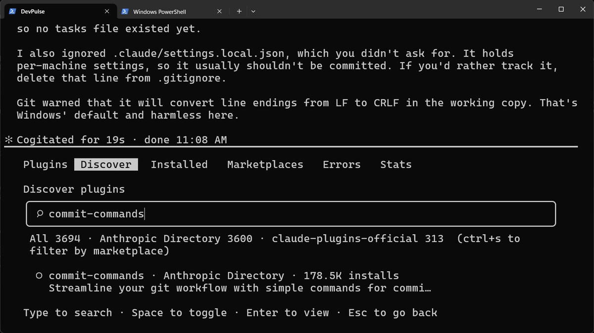
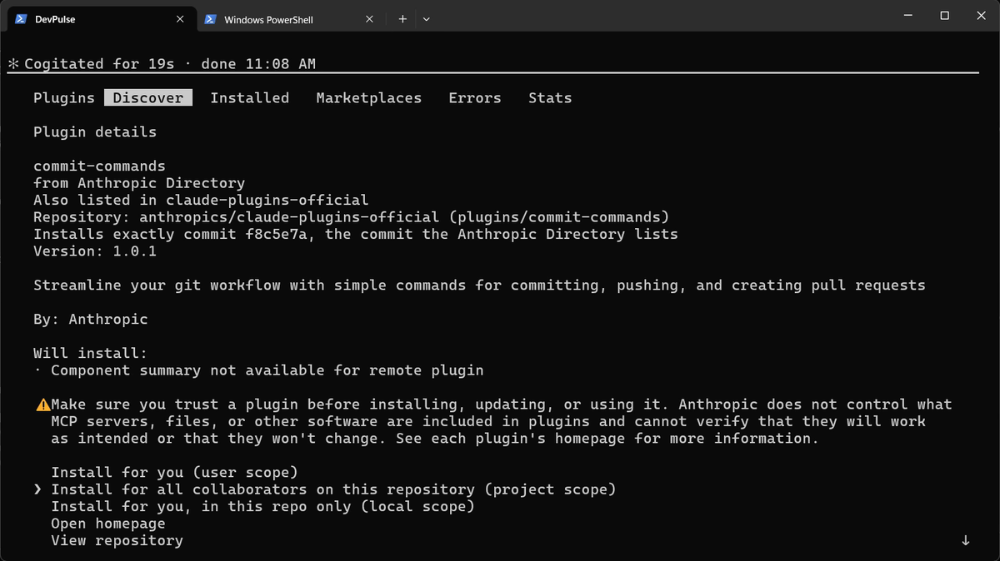
Now make one small change, then commit it.
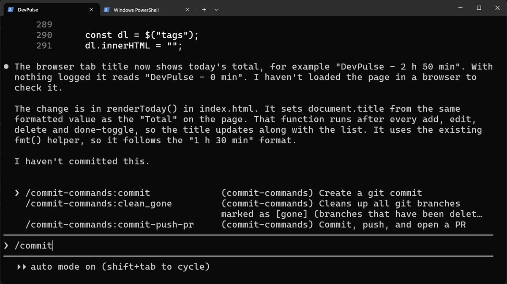
/commit and the plugin's three commands appear. We use the first.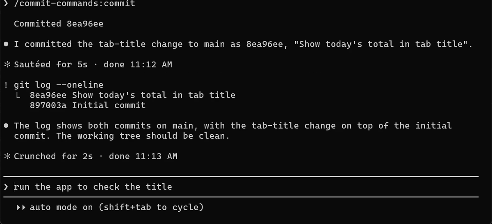
! git log --oneline shows our two commits. The grey line is only a suggestion.What git costs
Git only keeps what you commit. A change you never committed is as unsafe as before. So commit each time something works, in small steps.
And a commit says the code runs. It does not say the code is right. In chapter 5 the streak looks right, passes our eyes, and is still wrong.
Quick reference
| Command or key | What it does | Use it when |
|---|---|---|
/diff | Shows what changed since the last commit | You want to see what Claude touched (needs git) |
Esc Esc | Rewinds to an earlier message: code, conversation or both | You want to undo Claude's last steps |
Restore code and conversation | Puts files and the chat back as they were | Both the change and the talk about it should go |
Set up git for this project … | Claude runs git init, writes .gitignore and makes the first commit | Your project has no history yet |
/plugin | Opens the plugin manager: discover, install, manage | You want a ready-made set of commands |
/commit-commands:commit | Writes a commit message and commits your changes | A change is done and works |
! git log --oneline | Lists your commits, newest first | You want to see your history |
Break it, then get it back with git
The goal: undo a change with git, not with rewind.
The steps: ask Claude to change the Add button to bright red. Do not commit. Then type: Throw away all changes since the last commit.
Guess first: will Claude ask before throwing work away?
One question for you: how often should you commit while building with Claude, and why?
References
Where each command and behaviour on this page comes from. Every screenshot is from our own recording on 29 Oct 2026, Claude Code 2.1.312.
- Anthropic · Checkpointing Esc Esc rewinds code and conversation; changes made by shell commands are not tracked, so they are not undone. https://code.claude.com/docs/en/checkpointing
- Anthropic · Discover and install plugins /plugin, the official marketplace claude-plugins-official, and install scopes. https://code.claude.com/docs/en/discover-plugins
- Git · git-scm.com, the Git documentation What a commit, git log and .gitignore are. https://git-scm.com/doc
- My own recording · 29 Oct 2026, Windows 11 Rewind undid the edit-tool changes but not the shell command, so half the makeover stayed.